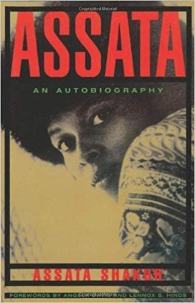
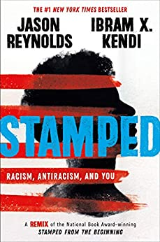

Other Books to Check Out






A provocative and humorous memoir-in-essays that explores the ever-shifting definitions of what it means to be black (and a man) in America For Damon Young, existing while black is an extreme sport. The act of possessing black skin while searching for space to breathe in America is enough to induce a ceaseless state of angst, where questions such as "How should I react here, as a Professional Black Person?" and "Will this white person's potato salad kill me?" are forever relevant. What Doesn't Kill You Makes You Blacker chronicles Young's efforts to survive while battling and making sense of the various neuroses his country has given him. It's a condition that's sometimes stretched to absurd limits: creating the farce where, as a teen, he wished for a white person to call him a racial slur just so he could fight him and have a great story to tell about it afterward; provoking the angst that made him question if "being straight" and being more confident around girls was something he could practice and get better at, like a crossover dribble; and generating the surreal experience of watching his Pittsburgh neighborhood gentrify from predominantly black to "Portlandia but with Pierogies." And, at its most devastating, it provides him reason to believe that his mother would be alive today if she had been white. From one of our most respected cultural observers, What Doesn't Kill You Makes You Blacker is a hilarious and honest debut that is both a celebration of the idiosyncrasies and distinctions of blackness and a critique of white supremacy and how we define masculinity.